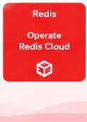

Hi, I'm Aajera Banu ☕
DevOps engineer by day, Redis Certified Associate: Cloud Operator, cloud architect, and coffee enthusiast by morning. I built this blog to share practical insights on containers, Kubernetes, distributed in-memory caching, CI/CD automation, and the art of engineering resilient infrastructure.
The Story
I dove into DevOps because I believed that shipping software shouldn't feel like a high-stakes lottery. Tired of hearing "it worked in staging", I dedicated myself to building reproducible pipelines, immutable container images, and self-healing orchestration clusters.
Along the way, the morning coffee ritual became an indispensable partner to engineering. Dialing in an espresso shot and dialing in a Kubernetes cluster demand the exact same mindset: understanding variables, measuring throughput, respecting latency, and iterating until the output is consistently flawless.
Containers & Coffee is where I share deep dives, configuration recipes, architectural patterns, and real-world post-mortems so other developers and DevOps engineers can build robust systems without the trial-and-error headaches.
Whether you're tuning an autoscaler, debugging an ingress gateway, or pulling a double shot of Ethiopian Yirgacheffe — make yourself at home.
Core Stack & Craft
Verified Credentials & Certifications
Official Badges & Certifications
Verified professional certification and digital skill badges earned from Redis and Amazon Web Services (AWS Educate).
Redis Certification & Cloud Badges
Verified in-memory database operations, high-availability clustering, and cloud administration from Redis.
Redis Certified Associate: Cloud Operator
Redis
Official professional accreditation validating specialized expertise in deploying, configuring, scaling, and operating Redis in cloud architectures. Covers master-replica failover, Sentinel clusters, memory budgeting, eviction policies, and low-latency cache reliability.
Get started with Redis Cloud
Redis
Validates core foundational competencies in Redis Cloud architecture, subscription setup, database creation, connection endpoint security, and cloud caching deployment.

Operate Redis Cloud
Redis
Validates advanced operational skills in running production workloads on Redis Cloud: cluster throughput management, replication, persistence tuning, metric dashboards, and automated scaling.
AWS Educate Digital Badges
Verified cloud computing, distributed storage, virtual networking, and scalable compute foundations from Amazon Web Services.
Cloud Computing 101
Amazon Web Services (AWS)
Foundations of cloud computing paradigms, distributed cloud infrastructure models, security compliance, and core AWS service fundamentals.
Getting Started with Storage
Amazon Web Services (AWS)
Cloud storage mechanisms and data architectures: Amazon S3 object storage, Elastic Block Store (EBS) volumes, lifecycle tiering, and data retention policies.
Getting Started with Networking
Amazon Web Services (AWS)
Core cloud networking concepts: Amazon Virtual Private Cloud (VPC), subnet segmentation, routing tables, Internet Gateways, and network security groups.
Getting Started with Compute
Amazon Web Services (AWS)
Cloud compute virtual server architectures: Amazon EC2 instance families, AMI template configuration, auto-scaling compute groups, and workload sizing.
Engineering Principles
Why Containers & Coffee?
Three simple rules that govern both my terminal and my coffee bar.
Let's Connect & Collaborate
Have a question about cloud infrastructure, container optimization, or want to share your favorite roast? Let's chat.